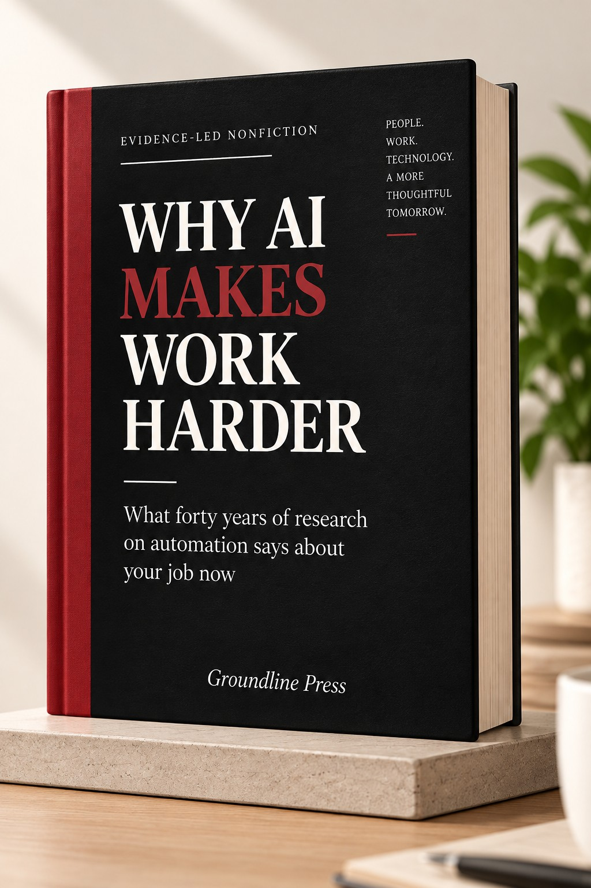

Evidence-Led Nonfiction
Why AI
Makes Work
Harder
What forty years of research on automation says about your job now
AI can save time on some tasks. But what happens to the time saved—and to the human work around AI—is more complicated than the promise suggests.

The promise was that AI would save time. It can. But time saved and difficulty removed are not the same thing.
Automation can shift human work toward monitoring, verification, exception handling and judgment—changing not only what people do, but sometimes what they have to learn and sustain.
Forty years of human-factors research on automation has examined exactly this pattern. The book brings that research to bear on the present moment—when capable AI systems are entering everyday knowledge work at scale.
It does not predict specific outcomes. It examines what the evidence shows about how human work changes when AI becomes part of the workflow.
What the book examines
Six threads through the research
01
Automation
Why automation often changes the character of work rather than simply eliminating it—and what that shift looks like in practice.
02
Verification
Why checking AI output can become a significant part of AI-assisted work—and why checking is harder than it first appears.
03
Confidence
Why confidence in an AI answer is not the same thing as correctness—and how fluent output can mask the need for scrutiny.
04
Missing information
Why detecting what AI leaves out can be harder than detecting an obvious error—and what that means for human oversight.
05
Human attention
How AI changes the pattern of escalation and supervision—and what reaches a human when AI is handling routine cases.
06
Learning
What happens to expertise and skill development when AI performs part of the work that people would otherwise have learned through doing.
Selected research findings
What the evidence shows
AI can make some work faster
Research discussed in the book suggests substantial productivity gains in certain writing and knowledge-work tasks when AI assistance is available. The gains are real. They are also not uniformly distributed across tasks or workers.
Performance has boundaries
The book examines research showing that AI assistance can become less reliable when tasks move outside the system’s effective capability range. Identifying where that boundary sits is a human task—and it is not always obvious in advance.
Checking becomes part of the work
Research discussed in the book suggests that AI assistance can shift human effort away from first-draft production toward editing, reviewing and verification. That shift changes what skills matter and what the working day actually involves.
Fluent does not mean correct
An AI answer can look polished and authoritative while still containing errors, omissions, or mischaracterisations that require careful scrutiny to detect.
Selected findings drawn from the research discussed in the book. The book documents the studies, methods and limitations behind these findings.
Before you decide
Read Chapter 1 free.
See how the book approaches AI and work: through research, evidence, and the practical difficulty of working alongside increasingly capable systems.
The ebook
What you receive
- Full 162-page ebook
- PDF format
- Instant digital delivery
- Research-led analysis across ten chapters
- Readable on desktop, tablet and phone
Price
₹299
International readers: $5.99
Get the ebook International — $5.99PDF delivered immediately after purchase
Who this is for
Four kinds of reader
People who work with AI
Professionals using AI in everyday knowledge work who want to understand what is actually happening to their work, not just their output speed.
People deciding how much to trust AI
Managers, analysts, researchers and writers calibrating their reliance on AI systems for consequential tasks.
People trying to understand where the human work went
Anyone who has noticed that automation can remove one task while creating another—and wants to understand why.
People who want evidence, not opinion
Readers who want to understand AI and work through research rather than through hype or reaction.
This is not a prompt book, a prediction about mass unemployment, or a sales pitch for AI.
It is an evidence-led examination of how human work changes when AI becomes part of the workflow.
Groundline Press publishes thoughtful nonfiction about technology, work, learning and the changing systems around us.
We are interested in books that take complicated subjects seriously without making them unnecessarily complicated.
Get the book
Why AI Makes Work Harder
A calm, research-led examination of AI and human work. For people who want to understand what the evidence actually says.
Read Chapter 1 firstWhy AI Makes Work Harder
PDF ebook · 162 pages · Instant delivery
₹299
International: $5.99
Buy the ebook International — $5.99Digital product · See refund policy
Questions
Frequently asked
The evidence is here. The question is what it means for your work.